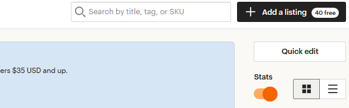
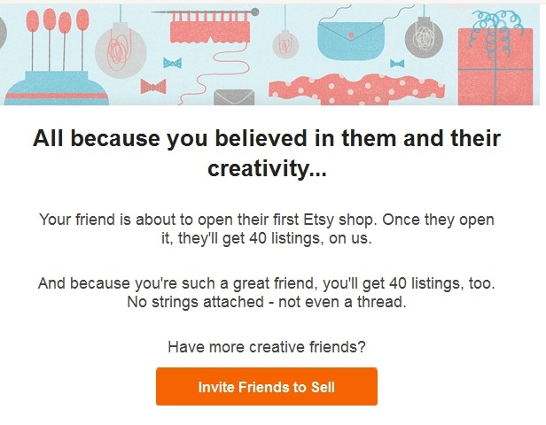

Можно ли вести несколько магазинов, которые зарегистриро-
ваны на разных людей
Например, у вас есть магазин. И ваш друг попросил вас вести его магазин, так
как у него нет на это времени.
Это не запрещено правилами Etsy. Главное – указать себя в магазине вашего
друга в качестве члена команды.
В то же время есть вероятность, что Etsy заблокирует оба магазина. Так как вход
в магазины происходит с одного и того же компьютера, то Этси могут посчитать,
что их владелец – один и тот же человек. Если правила нарушит один магазин
и его заблокируют – очень вероятно, что “накажут” и второй тоже, который пра-
вила не нарушал.
Поэтому лучше всего заходить в разные магазины с разных устройств.
Как работать на Etsy, если я живу в Крыму
В настоящий момент в отношении Крыма действуют санкции. Там не работает
PayPal, а также сами Etsy блокируют магазины.
Поэтому вы можете, например, приобрести VPN и заходить на сайт Этси и в
ПайПал под другим IP, как будто живёте в другом городе.
PayPal-аккаунт лучше открыть на данные человека, который живёт не в Крыму.
Но даже в этом случае есть высокая вероятность блокировки магазина.
Также не стоит заходить в свой Etsy-магазин, если вы путешествуете по Крыму.
Etsy могут закрыть его из-за входа с “запрещенной” территории.
Как отправлять товары почтой из Крыма
Так как Крым находится под санкциями в большинстве стран мира (включая,
США и страны Евросоюза), то таможня этих стран может не пропустить вашу
посылку.
Чтобы уменьшить или совсем исключить вероятность такого события, по сове-
там других продавцов отправлять товары можно так:
• ездить в другой регион России или Украины и отправлять оттуда
• пересылать знакомым в другой регион, чтобы они отправляли покупателю
• не указывать на посылке в обратном адресе Крым, а в заказе на Etsy трек-
номер писать только в личном сообщении покупателю.
Как принимать платеж, если покупатель и продавец из России
Если и продавец, и покупатель находятся в России и у них российские PayPal
аккаунты, то сделать заказ на Etsy нельзя – c 31 июля 2020 года переводы
между российскими пользователям PayPal запрещены.
Можно ли разместить товары бесплатно
У сайта Этси есть партнёрская программа для продавцов. Человек, который ещё
никогда не создавал магазин на Etsy, при регистрации может разместить 40 то-
варов бесплатно. Для этого ему нужно воспользоваться реферальной ссылкой
другого продавца.
Например, вы можете перейти по моей ссылке http://etsy.me/1UwuQz6 (или
скопировать её в адресную строку браузера) и тогда и вы, и я получим по 40
бесплатных размещений для наших магазинов.
После того, как вы зарегистрируете магазин, вы тоже можете приглашать своих
друзей для участия в этой программе. Для этого вам нужно перейти по ссылке
https://www.etsy.com/invites/sell, ввести в поле электронный адрес своего
друга или скопировать ссылку, которая указана на вашей странице.
Чтобы получить бесплатные листинги, нужно сначала зареги-
стрироваться как покупатель и только потом переходить по
партнёрской ссылке?
Вы можете воспользоваться партнёрской ссылкой, если ещё не зарегистриро-
ваны на Etsy.
Но если вы уже имеете аккаунт, но у вас нет магазина – вы всё равно можете
воспользоваться реферальной ссылкой для получения 40 бесплатных размеще-
ний.
Какие ограничения у реферальной программы
Реферальная программа доступна только для новых продавцов площадки, т.е.
тех, кто раньше не имел своего магазина.
Соответственно запрещено:
• регистрировать второй магазин по реферальной ссылке своего первого
магазина
• регистрировать магазин по реферальной ссылке, если предыдущий мага-
зин был заблокирован администраторами или закрыт по вашей собствен-
ной инициативе
Если правила реферальной программы будут нарушены, то администрация Etsy
может лишить магазины начисленных бесплатных размещений.
Сколько по времени действует реферальная ссылка
Реферальная ссылка не имеет ограничений по времени и количеству пригла-
шенных людей.
Как узнать, что по моей реферальной ссылке кто-то зареги-
стрировался
40 бесплатных размещений будет зачислено каждому магазину только после
того, как регистрация новичка полностью завершена (магазин открыт, есть хотя
бы один опубликованный товар).
Чтобы проверить, пришел ли вам бонус, нужно зайти на страницу Shop Manager
— Listings и справа, в самом верху, вы увидите синюю кнопку и надпись «+Add
a listing 40 free».


После того, как вашей ссылкой кто-то воспользуется, вам на почту придут 2
письма. В первом говорится о том, что кто-то начал регистрацию.
А во втором – что такой-то магазин (и ссылка на него) был зарегистрирован на
Этси.

Если кто-то зарегистрировался по моей партнёрской ссылке и
его магазин закрыли за нарушения – что будет со мной
Etsy оставляет за собой право снять начисленные бесплатные листинги в слу-
чае, если магазин нарушает правила площадки.
Если кто-то начал регистрацию магазина по моей партнёр-
ской ссылке, но не довёл её до конца – что тогда
Вы не получите 40 бесплатных листингов до тех пор, пока приглашенный вами
продавец не завершит регистрацию магазина.
Через какое время сгорают бесплатные листинги
У бесплатных листингов нет срока истечения их использования. Можете ис-
пользовать их сейчас или через год.
Когда расходуются бесплатные листинги
Бесплатные листинги, которые есть на балансе магазина, расходуются в двух
случаях:
• при публикации нового листинга
• при обновлении существующего листинга (автообновление после 4 меся-
цев размещения, обновление после продажи или обновление вручную)
Как только бесплатные листинги закончатся, за эти операции нужно будет пла-
тить по 20 центов.
На какую почту регистрировать аккаунт Etsy
Etsy работает с различными почтовыми сервисами, в том числе Mail.Ru и Ян-
декс. Лично я регистрировала свой аккаунт на почту Google Gmail.
Как придумать название магазину
Если у вашего бренда еще нет имени и вы пока не знаете, чем руководство-
ваться – это не проблема. Вот на что стоит обратить внимание:
• отразите в своём названии стиль ваших изделий. Если ваши товары не-
обычны и уникальны, пусть эта уникальность присутствует в имени. Если
изысканны и утонченны - расскажите об этом в названии своего магазина
• обдумайте правописание названия. Выберите то, что легко произнести и
написать. Первое поможет людям запомнить ваше имя, последнее — поз-
волит легко найти вас снова
• проверьте, легко ли вас запомнить. Вспомните названия магазинов, кото-
рые вы встречали в своей жизни и которые «засели» у вас в памяти. Что
у них общего? Постарайтесь руководствоваться тем же принципом
• обязательно проверьте в Google не занято ли ваше имя. Вдруг уже кто-то
есть с таким же названием, тогда вас легко смогут перепутать.
Если вдруг имя, которое вы придумали, оказалось занято, не отчаивайтесь. Вы
можете добавить к нему дополнительное слово, вроде, Shop или Boutique, а
также ваше местоположение или даже инициалы.
Кроме того, после регистрации магазина вы можете бесплатно поменять его
название несколько раз.
Какую страну магазина выбрать при регистрации
Если вы имеете гражданство той страны, в которой проживаете, а также все
ваши банковские карты и счета зарегистрированы в этой стране (включая акка-
унт PayPal), тогда вам нужно указать свою страну при регистрации магазина на
шаге 4.
Если же вы живете в одной стране, но имеете двойное гражданство, а также
ваш PayPal аккаунт зарегистрирован, например, на российские данные, тогда
вам нужно хорошо обдумать, какую информацию указывать на шаге 4, реги-
стрируя аккаунт на Etsy.
Заранее проверьте, есть ли ваша страна в данном списке
https://help.etsy.com/hc/en-us/articles/115015710408 и доступен ли вам Etsy
Payments. А затем узнайте все тонкости оплаты налогов в вашей стране.
У меня есть счёт в банке другой страны, могу ли я подключить
Etsy Payments
Допустим, вы живете в Украине и отправляете свои товары отсюда же. У вас
есть счет в банке другой страны, которая находится в данном списке
https://help.etsy.com/hc/en-us/articles/115015710408. Вы хотите подключить
способ оплаты Etsy Payments.
В этом случае Etsy потребует от вас доказательства, что вы являетесь резиден-
том той страны, где у вас открыт банковский счет. Например, скан паспорта или
ID-карточки.
Можно ли начать регистрировать магазин сегодня, а закон-
чить позже
Да, это можно сделать. У вас сохранятся все настройки и выполненные шаги
регистрации.
Единственный момент: если вы регистрировались по партнёрской ссылке и хо-
тите получить бесплатные листинги, то лучше не прерывать регистрацию.
Можно ли открыть новый магазин, закрыв старый
На Etsy запрещено открывать новый магазин, если старый был заблокирован.
Бывали случаи, когда продавец закрывал магазин по собственной инициативе
(а не в результате нарушения правил), но новый магазин открыть не получалось
– админы его блокировали.
Тем не менее в правилах площадки нет запрета или ограничений на самостоя-
тельное закрытие старого и открытие нового магазина.
Если вы решите не удалять первый магазин, тогда откройте второй магазин «с
нуля», связав его с первым (который можно отправить «на каникулы» или про-
сто удалить из него все товары). Подробнее о том, как связывать магазины,
смотрите вопрос «Можно ли открыть второй/третий магазин?».
Как получить бесплатные листинги, если уже начал(а) реги-
страцию магазина
Если вы ещё не завершили регистрацию магазина, то можете выйти из текущего
аккаунта и завести новый на новую электронную почту, перейдя по партнёр-
ской ссылке.
После чего начать новую регистрацию магазина на новый аккаунт.
Как получить бесплатные листинги, если уже есть магазин
Если вы завершили регистрацию магазина, и он открыт, то бесплатные листинги
можно получить только, если вы пригласите на Etsy друзей или знакомых по
своей партнёрской ссылке. Её можно найти на следующей странице:
https://www.etsy.com/invites/sell
И ни в коем случае не следует закрывать магазин и пытаться открыть новый. За
это Этси могут вас заблокировать. Хотя у некоторых продавцов это получалось.


Как зарегистрировать магазин
Так как все дальнейшие инструкции и скриншоты будут на английском языке,
то рекомендую выставить язык сайта English.
Для этого зайдите на главную страницу сайта https://etsy.com, промотайте стра-
ницу в самый низ и нажмите на блок с настройками.
Выставите параметр Language как English (US) и нажмите кнопку Save.
Шаг 0
Предположим, что вы уже ознакомились с вопросом «Какие комиссии суще-
ствуют на Etsy» и знаете, что размещение каждого товара – платное.
Но если вы регистрируетесь первый раз, то можете воспользоваться партнер-
ской ссылкой и разместить 40 товаров бесплатно. Для этого перейдите по моей
ссылке http://etsy.me/1UwuQz6 (или скопируйте её в браузер).
После чего перед вами откроется приветственное сообщение с моей фотогра-
фией и сообщением «Откройте Etsy магазин и разместите первые 40 товаров
бесплатно» (Open an Etsy shop and list your first 40 items free).


Нужно нажать на кнопку Open a shop today.
Шаг 1
После этого нужно зарегистрироваться в системе.
Введите адрес электронной почты и нажмите кнопку Continue.
Придумайте логин (First name) и пароль (Password). А затем нажмите кнопку
Register.